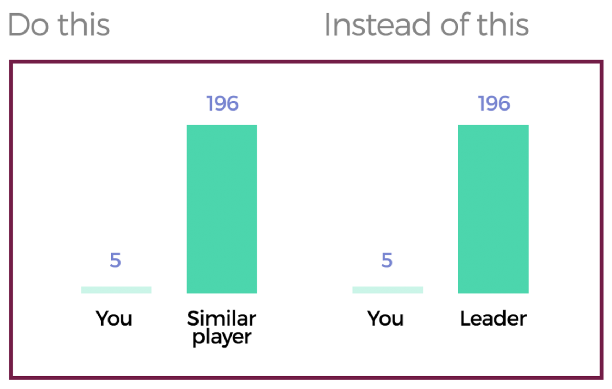
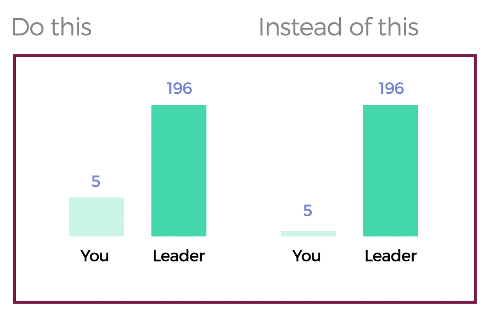

I designed and coded novel techniques to improve digital social comparison.
This work started with the following question: “How can we design better user performance feedback using Social Comparison?” To obtain some insight in this context, I read copious amounts of Psychology research findings related to Social Comparison.
If you play games, use a Fitbit, or look at your electricity bill, you may have seen a graph or a score that compares your performance to someone else’s. Designers use these comparisons to motivate people who see them because people tend to compare themselves with others. These comparisons can motivate people to improve themselves. Social comparison information is often shown in health applications, financial tools, or games. However, while comparisons to top-ranked players can motivate people, they can also be demotivating if too extreme.
Needless to say, Psychology research is incredibly insightful. For someone like me who finds pleasure in building things for people to use, reading tons of robust patterns of how people behave is incredibly fun. I then translated these patterns in (too many) sketches of possible prototypes to be tested.
I then created 2 design prototypes that traced back to the concept of "closeness of comparison."
People are more motivated by comparisons with others who are closer to them in respect to opinions or performance. A positive evaluation of comparisons is more engaging and triggers action. Therefore, I designed a novel type of comparison called closeness to comparison, and proposed two visual strategies that bring users closer to their comparison targets. The intention is balancing the challenge perception so that people positively evaluate their chances of success. The two closeness of comparison strategies I proposed are:
1. Compare users to those who are similar to them, in regards of experience
or other aspects such as location, age, interests.

2. Subtly distort users’ performance feedback so that it initially
looks closer to the comparison target.

I decided that a game would be the perfect context to test the proposed designs. I used an open-source version of the Flappy Bird game and built additional feedback on top of it. To implement the proposed designs, I learned how to code JavaScript.
In the second design, for example, I used a simple log transformation
to skew the visual representation of performance.
See the Pen log transformation by Lucas Colusso (@lucascolusso) on CodePen.